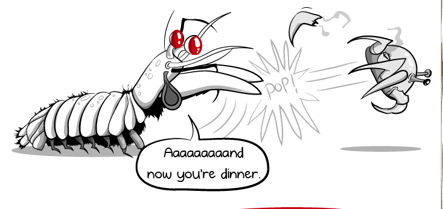

Fatos sobre o Stomatopada
Camarão louva-a-deus, ou estomatópodes, ou ainda Odontodactylus scyllarus são crustáceos marinhos carnívoros da ordem Stomatopoda, ramificados de outros membros da classe Malacostraca há cerca de 340 milhões de anos. O camarão mantis normalmente cresce até cerca de 10 cm (3,9 pol) de comprimento, enquanto alguns podem atingir até 38 cm. A carapaça de um camarão mantis (a casca dura e grossa que cobre crustáceos e algumas outras espécies) cobre apenas a parte traseira da cabeça e os primeiros quatro segmentos do tórax. As variedades variam em cores de tons de marrom a cores vivas, com mais de 450 espécies de camarão mantis conhecidas. Eles estão entre os predadores mais importantes em muitos habitats marinhos rasos, tropicais e subtropicais. No entanto, apesar de comuns, eles são pouco compreendidos, pois muitas espécies passam a maior parte de suas vidas escondidas em tocas e buracos.
| Reino | Filo | Subfilo | Classe | Subclasse | Ordem |
| Animalia | Arthropoda | Crustacea | Malacostraca | Hoplocarida | Stomatopoda |
Visão
Esses animais possuem o mais complexo sistema de visão de cores do mundo animal, pois enxergam 12 cores primárias, correspondentes aos 12 pigmentos distintos presentes em sua retina. Nossos olhos possuem três tipos desses receptores - que correspondem à luz azul, verde e vermelha -, que nos permitem perceber o espectro de cores que vemos. Os cães contam com apenas dois tipos de cones (verde e azul), e é por isso que eles vêm tons de azul, verde e um pouco de amarelo. Muitos anfíbios, répteis, aves e insetos possuem quatro tipo de cones, o que significa que espécies dessas classes conseguem ver cores que o nosso cérebro é incapaz de processar. Algumas espécies específicas de borboletas e possivelmente pombos possuem cinco cones de percepção de cor, o que aumenta ainda mais a quantidade de pigmentos que eles são capazes de perceber. O sistema de visão dos estomatópodes possui doze cones sensíveis à luz e outros quatro que filtram a luz (16 cones no total), o que lhes permite ver cores polarizadas e imagens multiespectrais. Como cada cone pode ver cerca de 100 cores, os estomatópodes são capazes de ver 1024 cores, ou seja, 1 septilhão de cores. Em comparação, o olho humano vê 106 cores, ou seja, 1 milhão de cores apenas. A visão dos estomatópodes é sensível à luz ultravioleta, mas ainda é desconhecido se ela pode distinguir a luz infravermelha.

Lagosta boxeadora?
Também conhecidas como esquilas ou lagosta-boxeadora, espalhadas pelas costas dos mares tropicais e subtropicais. Além das patas, elas apresentam uma silhueta característica, devido ao grande comprimento aparentemente de seu abdómen. Os ovos ficam ligados por uma massa gelatinosa que a mãe carrega contra o ventre até que eclodem, limpando-os sem parar. São animais que apresentam comportamentos sociais muito variados, desde ameaças visuais contra predadores até comportamentos de côrte. De acordo com a anatomia da sua pata raptorial é possível distinguir entre dois grupos funcionais, as perfuradoras (spearers) ou as esmagadoras (smashers), sendo que cada um dos tipos apresenta sua própria variação comportamental e até mesmo de habitat. As maiores esmagadoras, tais como exemplares de Odontodactylus scyllarus, são capazes de desferir um dos mais rápidos e violentos golpes do reino animal, um soco que pode apresentar a velocidade de um tiro calibre .22 (equivalente a 720 km/h) e uma pressão de impacto de 600 N/cm². Essa força esmagadora é a responsável pelo seu título de "lagosta-boxeadora" e é capaz de facilmente quebrar a carapaça de um caranguejo, as conchas duras e calcificadas de gastrópodes ou até mesmo quebrar o vidro reforçado de um aquário.
Imagem retirade de Theoatmeal.
Referências Bibliográficas
1. https://imagens.mdig.com.br/thbs/44508mn.jpg
{kind=link}
2. https://pt.wikipedia.org/wiki/Stomatopoda